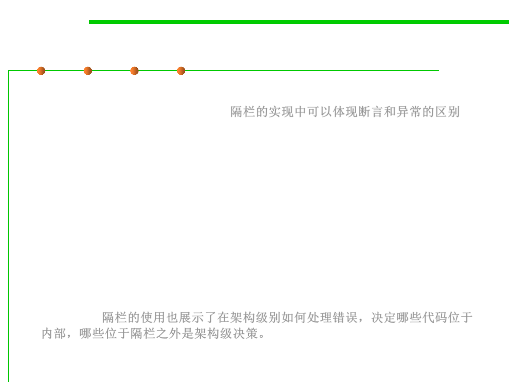

7.3 Assertions and Defensive Programming
Relationship between Barricades and Assertions
▪ The use of barricades makes the distinction between assertions
and error handling clean cut. 隔栏的实现中可以体现断言和异常的区别
– Routines that are outside the barricade should use error handling
because it isn’t safe to make any assumptions about the data.
– Routines inside the barricade should use assertions, because the data
passed to them is supposed to be sanitized before it’s passed across the
barricade. If one of the routines inside the barricade detects bad data,
that’s an error in the program rather than an error in the data.
▪ The use of barricades also illustrates the value of deciding at the
architectural level how to handle errors. Deciding which code is
inside and which is outside the barricade is an architecture-level
decision. 隔栏的使用也展示了在架构级别如何处理错误，决定哪些代码位于
内部，哪些位于隔栏之外是架构级决策。